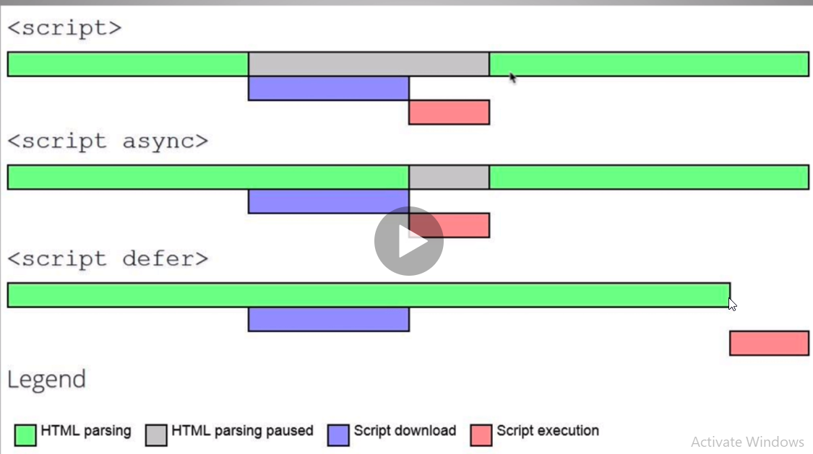
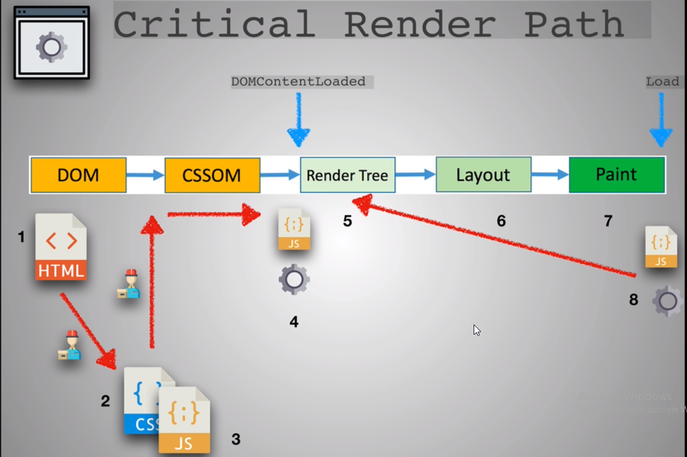

-->Amazon calculated that on their website if a pageload slows down just one second that could cost them 1.6 billion in sales each year
-->Google so did a calculation and by slowing its search results by just four tenth of a second they could lose up to million searches per day meaning they'd lose out on all that advertising money that they get


-----------------------------------------------------------
Network Performance
with jpg-jpeg you can't have a transparent background, to have transparent background you must use something like png or gif, so jpg for complex images with lots of colors, it's tend to be a little bit big in file size
Gif-->usually limit the number of total colors that you can use in a GIF
SVG--->is different category not like gif,jpg,png, they usually tend to be very simplistic visual things with few colors


----------------------------------------------------------
Use CDNs like imigx-->they are saying hey give us all your images no matter how big they are no matter how an optimized they are, just upload it onto our website and then we'll give you back your URL
---------------------------------------------------------
Delivery Optimizations-->if you must use a library find maybe libraries that are lightweight and think twice before you just put another script or another library just for some cool animations on your website
---------------------------------------------------------
Critical Render Path
-->when HTML file arrives and browser starts reading it and as soon as HTML arrives it starts creating something called DOM(Document Object Model) and when the browser parses or read HTML it incrementally generates this tree model of the HTML tags that we need to build for the website and this dom describes the contents of the page but then just as it's about to start doing that it encounters a style link to grab the CSS from server and when CSS file arrives it get back working on the DOM, once the browser recei es all the CSS it also starts generating tree model called CSSOM.
and after while it sees a javascript tag script so it grabs it from the server and this js file is read by the browser and executes any changes on DOM or CSSOM, now once all that's done the browser combines the DOM and CSSOM into render tree, so now the browser uses this render tree to figure out the layout(Where should i position these items in what location) and once it figures that out is going to paint all the pixels and then website render
-->The neat thing about images it's not part of this process, images are just kind of downloaded in the background

How do we optimize HTML file which is step 1?
-->load styles that is CSS files as soon as possible and js files as late as possible, javascript requires the HTML CSS Parsing to finish before it can be run
-->We want to make sure that javascript files tend to be at the bottom and there is some exeptions, let's say for example you have google analytics which is a script tag and you want that to be executed right away maybe you want to know what the user does the very first second on the website
---------------------------------------------------------
-->CSS is called render blocking because in order to construct the render tree we wait for CSSOM to complete and combine it with the DOM to create the render tree
---------------------------------------------------------

-->Rule with async for scripts add them to anything that doesn't affect the DOM or CSSOM like Google Analytics scripts or Tracking scripts
-->defer is really good option for scripts that will act on the rendered tree or the DOM but they're also not important to loading maybe the above the fold content

------------------------------------------------------------
HTTP/2-->still compatible with HTTP but its main goal is to improve network latency, HTTP/2 may change how you consider combining resource, for example: minification compression image optimization should definitely be continued with HTTP/2, However physically combining files into a bundle might not achieve the desired results with HTTP/2 because of something called multiplexing, This is primarily because server requests are faster on HTTP/2
HTTP/2
1-it's binary instead of textual
2-it's fully multiplexed
3-with one connection you have many files sent to it